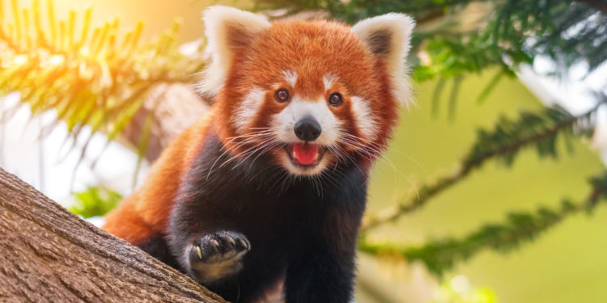

All about animals
There are many animals in the world that look very different form every other
animal, or have real life super powers, and many more discoveries!
Visit Faunalytics,com!

Animal population
Brazil is the Earth’s biodiversity champion. Between the Amazon rainforest and Mata Atlantica forest, the woody savanna-like cerrado, the massive inland swamp known as the Pantanal, and a range of other terrestrial and aquatic ecosystems, Brazil leads the world in plant and amphibian species counts. It ranks second in mammals and amphibians, third in birds, reptiles and fish.
Red Panda's Habitat
Red pandas live in high-altitude, temperate forests with bamboo understories in the Himalayas and other high mountains. They range from northern Myanmar (Burma) to the west Sichuan and Yunnan Provinces of China. They are also found in suitable habitat in Nepal, India and Tibet.
Anatole France once said:Until one has loved an animal, a part of one's soul remains unawakened.
Unique Animals
Like I said in the begining that there are animals that look very different from other animals. Well, that's true. Above, you can see a very cute dog that looks very different form other dogs- because it's fluffy!
Save Birds!
 We have to save birds. Each day, thousands of birds die... because of us. By using electricity so much even when you don't need it, because of so many people the smoke, and other reasons like plactic. Birds deserve a life too. So don't kill them. This is their world too.
We have to save birds. Each day, thousands of birds die... because of us. By using electricity so much even when you don't need it, because of so many people the smoke, and other reasons like plactic. Birds deserve a life too. So don't kill them. This is their world too.
Click here to learn about Birds!
For more info, please leave me a mail.